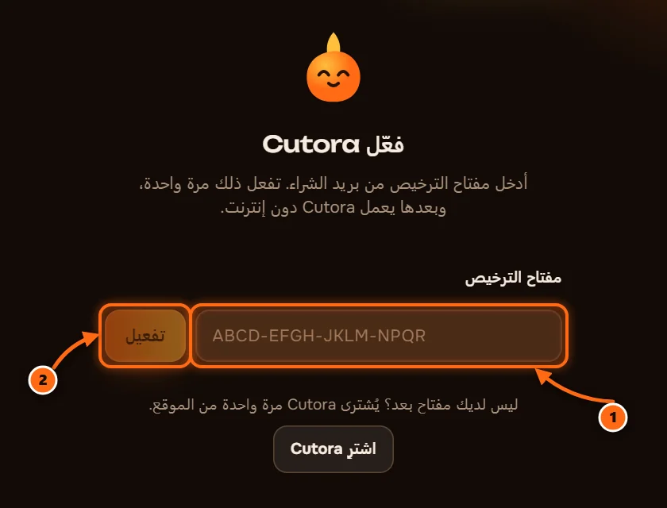
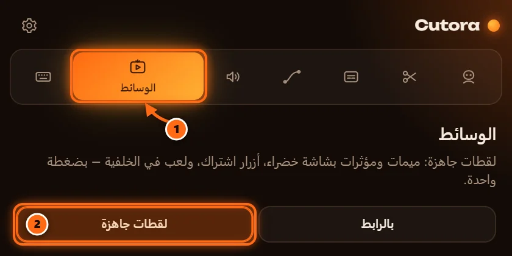

تثبيت Cutora
ست خطوات قصيرة، نحو خمس دقائق. ستحتاج البريد الذي وصلك بعد الدفع.
افتح رسالة Cutora
فيها رابط التنزيل ومفتاح الترخيص. احتفظ بالمفتاح، ستحتاجه في الخطوة 5.

أغلق Premiere Pro
يضيف المثبّت Cutora إلى Premiere، لذلك يجب أن يكون Premiere مغلقًا أثناء التثبيت.
شغّل المثبّت
افتح الملف الذي نزّلته واتبع الخطوات. كل ما يحتاجه Cutora بداخله: اللوحة والتعرّف على الكلام وأدوات الفيديو. المثبّت باللغة الإنجليزية: اقبل الاتفاقية (I accept the agreement) ثم اضغط Next ثم Install.

أدخل مفتاحك
الصق المفتاح من البريد واضغط تفعيل. يحتاج ذلك إلى الإنترنت مرة واحدة، وبعدها يعمل Cutora دون اتصال.

نزّل حزمة اللقطات
اختياري. مقاطع شاشة خضراء ولقطات لعب، نحو 1.7 غيغابايت. افتح الوسائط ثم اللقطات واضغط تنزيل. يمكنك فعل ذلك لاحقًا في أي وقت.

المتطلبات: Windows 10 أو 11، و Adobe Premiere Pro 2022 أو أحدث.
إذا حدثت مشكلة
لا يظهر Cutora في Window ثم Extensions
أعد تشغيل Premiere Pro بعد التثبيت. إن لم يظهر بعد، شغّل المثبّت مرة أخرى وتأكد أن إصدار Premiere Pro لديك 2022 أو أحدث.
يقول Windows «حمى Windows جهاز الكمبيوتر»
اضغط مزيد من المعلومات، ثم التشغيل على أي حال. يعرض Windows هذا للتطبيقات الجديدة التي لم يرها كثيرًا بعد.
المفتاح مستخدم بالفعل على جهازين
راسل الدعم من البريد الذي دفعت به، وسنحرر مكانًا لجهازك الجديد.
برنامج Premiere Pro لدي بلغة أخرى
أسماء القوائم مترجمة بحسب لغة البرنامج. يتبع Cutora لغة Premiere، ويمكنك تغييرها من إعدادات Cutora.
كيف أزيل Cutora؟
افتح إعدادات Windows، ثم التطبيقات، وابحث عن Cutora واضغط إلغاء التثبيت.